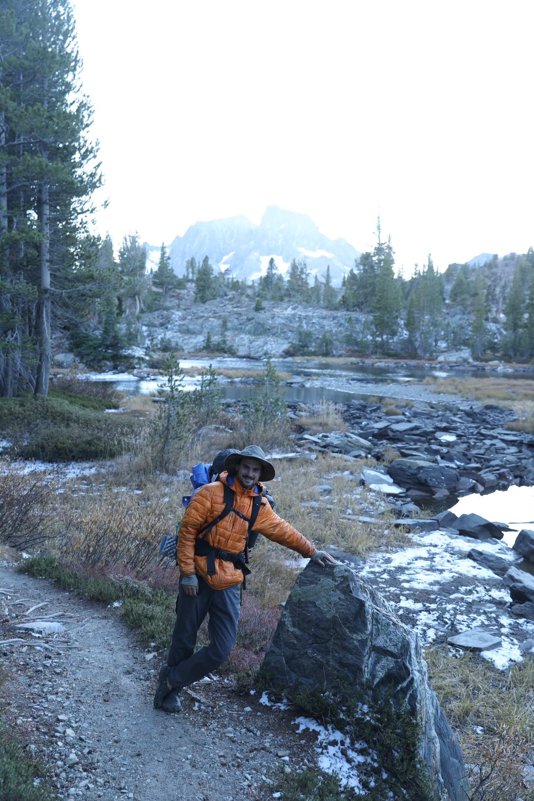

About
Work, school and beyond
Who I am
If you had to find me, there’s a good chance I’d either be elbow‑deep in a dataset or ankle‑deep in a river. I grew up in San Francisco, went to Mission High, and somehow turned “going outside with friends” into a life that revolves around environmental stories and trying to make sense of complex environmental problems.
I love the outdoors and thought thats all I would do with my life. But I felt idle as an outdoorsperson when I saw fires from mismanaged forest ravage the trees I grew up playing in, a changing climate disrupt the water cycle I depend on and an AI boom create new fear and uncertainty for our natural resources and protected lands. I wanted to be on the front lines of a changing world, one where data drives decisions, policy, economy and often life itself. So I returned to school for Environmental Data Science and thus, my website is born.

How I got here
At UC Santa Barbara, I studied Environmental Studies and minored in Professional Writing on the science communication track. Somewhere between late‑night deadline scrambles as an investigative reporter, board meetings for the Excursion Club, and surfing at dawn before class, I realized I didn’t just want to “do” environmental work—I wanted to help people understand it.
That impulse took on new shape during my Environmental Leadership Incubator project on Platform Holly, an abandoned oil platform off the Santa Barbara coast. I came into the project expecting to find a “right” answer. Instead, I found trade‑offs: remove the platform and restore the view but lose a thriving reef; leave it and protect marine life but keep a symbol of fossil fuel extraction on the horizon. My role shifted from advocate to translator—leading kayak trips, running a social media project, and writing public comments that tried to hold complexity instead of flattening it.
Those experiences convinced me that environmental change starts with the stories we tell about data, risk, and each other.
Work that has shaped me
Over the last few years, I’ve bounced between roles that all orbit the same themes: trust, communication, and shared responsibility.
On the mountain: As a ski and snowboard instructor at Palisades Tahoe, I spent my days with people taking real physical risks—often on snow for the first time. I learned how to build trust quickly, read fear and excitement in body language, and turn technical instruction into simple, memorable cues. (Also: how to keep stoke levels high in a blizzard.)
In the backcountry: At Camp Tawonga, I led backpacking and road trips with teens, including neurodivergent campers. Guiding meant more than routes and meal plans—it was about creating a container where everyone could take up space, be scared, try hard things, and feel supported.
Across continents: With International Rivers, I helped communicate global campaigns around rivers and dams—drafting press releases, blogs, and social content; mapping 116 Day of Action events; and coordinating with partners across six continents and multiple languages. It showed me how local water stories plug into global power structures.
On campus and in community: As Director of the Excursion Club at UCSB, I helped grow the club to over 1,000 members, organized outdoor trips, managed gear systems, and tried to make “going outside” feel less gated by gear, money, or experience.
There have also been plenty of professional side quests: building a log cabin, delivering late‑night snacks and managing shift teams as a Duffl racer and captain, teaching surfing with City Surf Project, working events with floral designers, and volunteering in a biodiversity lab. Each one taught me a different way people move through risk, beauty, and care.

How I think about data & stories
I’m currently diving deeper into environmental data science—learning to use tools like Python, GIS, and statistical modeling not just to generate answers, but to ask better questions. I care less about the flashiest model and more about whether the people most affected by environmental decisions feel respected, informed, and seen in the process.
To me, a good visualization or report:
- Makes trade‑offs visible, instead of hiding them inside jargon or acronyms.
- Holds uncertainty honestly, without using it as an excuse for inaction.
- Invites more people in, especially those who have historically been pushed out of environmental decision‑making and outdoor spaces.
That’s the throughline in my work: use information to build bridges, not walls.
A life built around going outside
Outside of school and work, I’ve hiked the John Muir Trail in crocs to Mt Whitney during a blizzard, lived and worked on farms and ecovillages in Mexico and Brazil, and spent a lot of time thinking about how land, labor, and community are woven together.
Being outdoors is a way of being in relationship with place and people. I care that everyone is included, feels safe, and that we consider whose stories are centered when we talk about “nature.”

If you want to connect
If any of this resonates—whether you’re working on environmental data projects, building community outdoors, or just trying to make sense of complex systems—I’d love to chat.
You can reach me through the contact info on this site or find me on LinkedIn at www.linkedin.com/in/lucianbluescher.